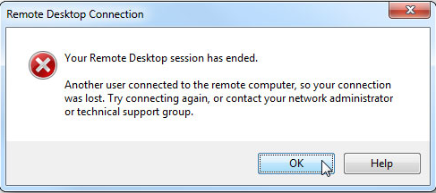
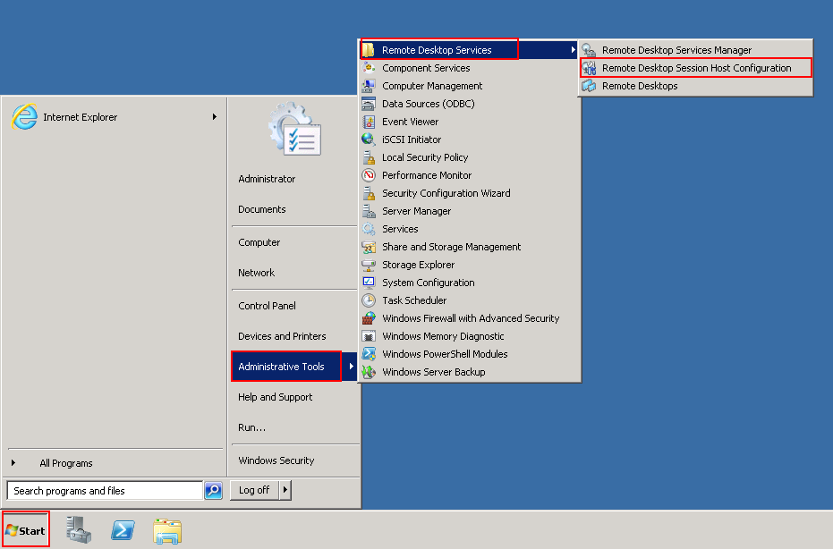
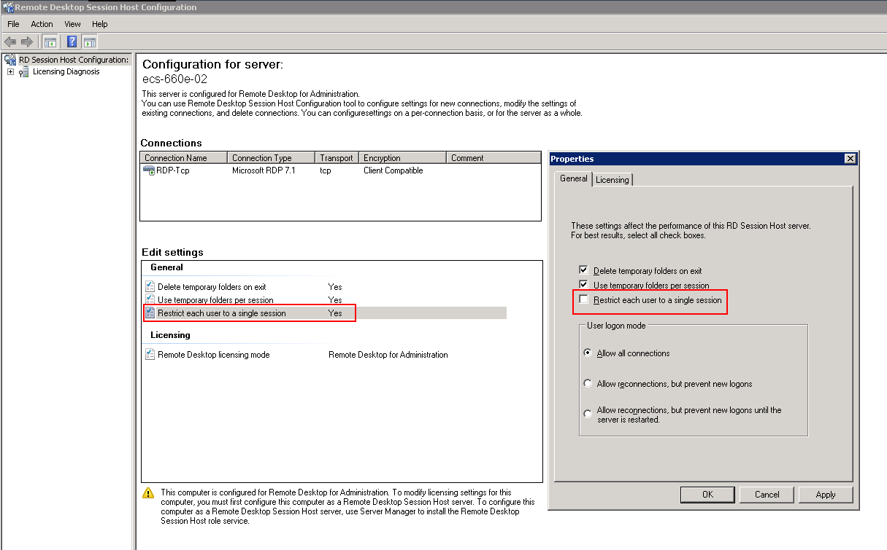
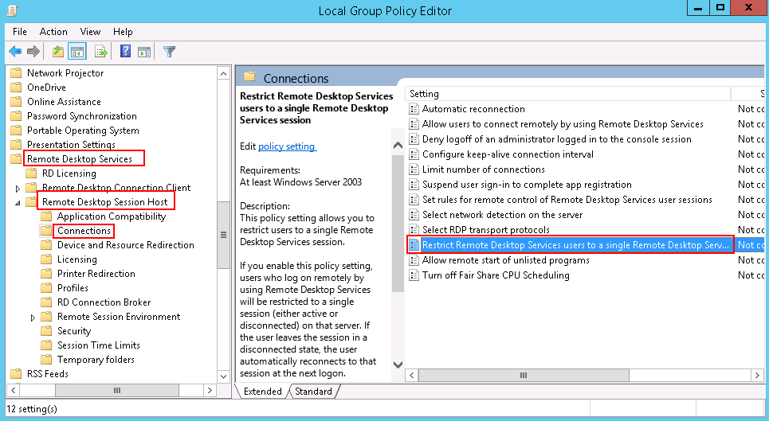
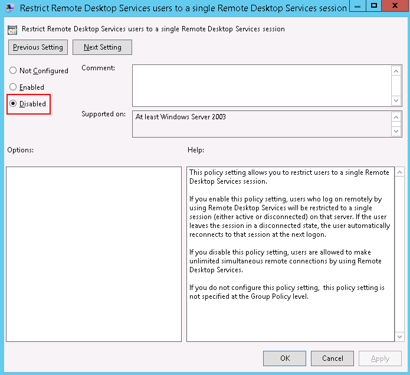

Symptom
An error message is displayed indicating that your remote desktop session has ended because another user has connected to the remote computer.
Figure 1 Ended remote desktop session

Windows Server 2008
- Choose Start > Administrative Tools > Remote Desktop Services > Remote Desktop Session Host Configuration.
Figure 2 Remote Desktop Session Host Configuration

- Double-click Restrict each user to a single session and deselect Restrict each user to a single session, and click OK.
Figure 3 Modifying the configuration

Windows Server 2012
- Choose Start > Run. In the Run dialog box, enter gpedit.msc and click OK to start Local Group Policy Editor.
- Choose Computer Configuration > Administrative Templates > Windows Components > Remote Desktop Services > Remote Desktop Session Host > Connections.
Figure 4 Connections

- Double-click Restrict Remote Desktop Services users to a single Remote Desktop Services session, change the value to Disabled, and click OK.
Figure 5 Modifying the configuration

- Run gpupdate/force to update the group policy.